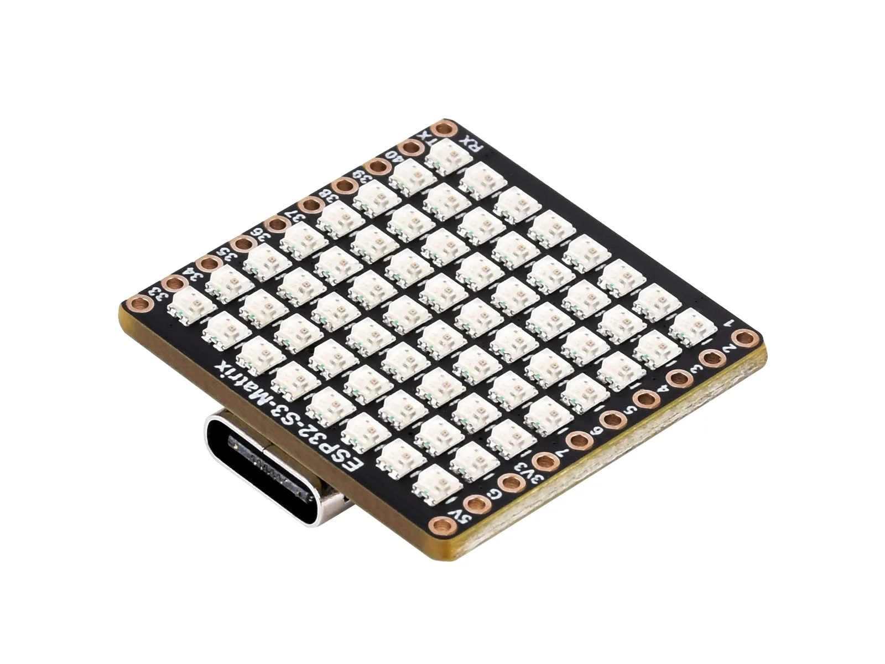
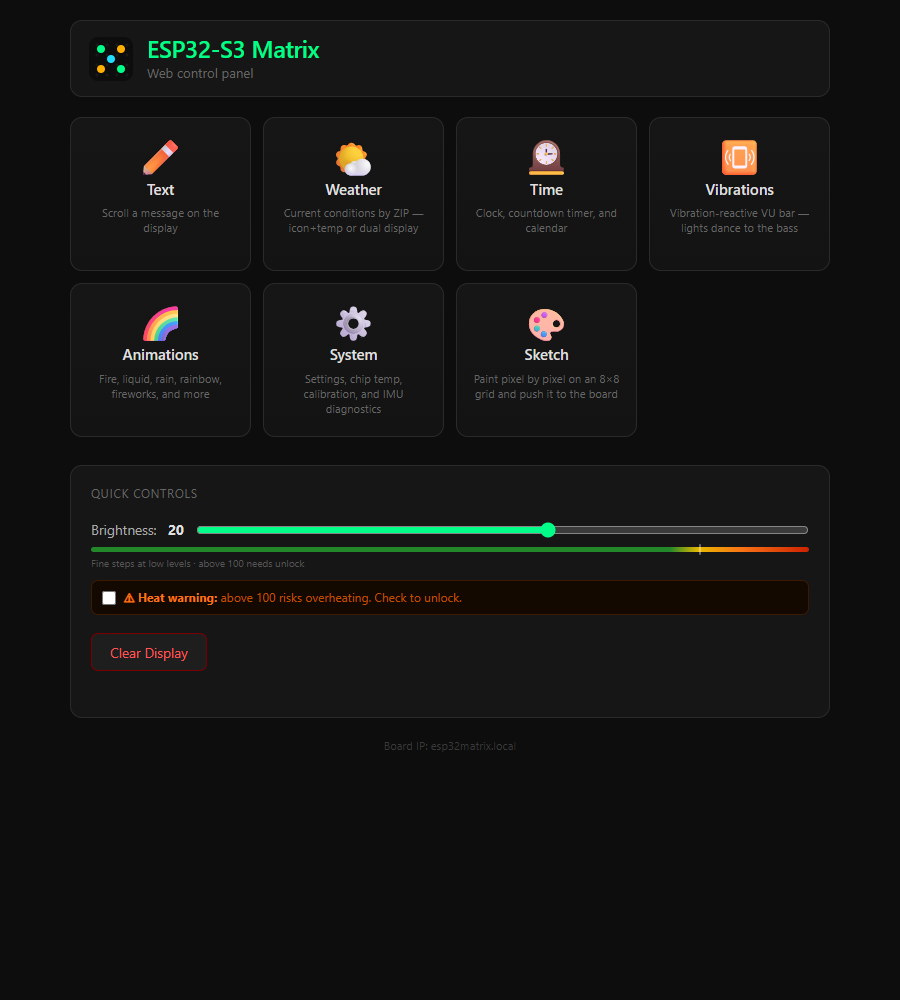
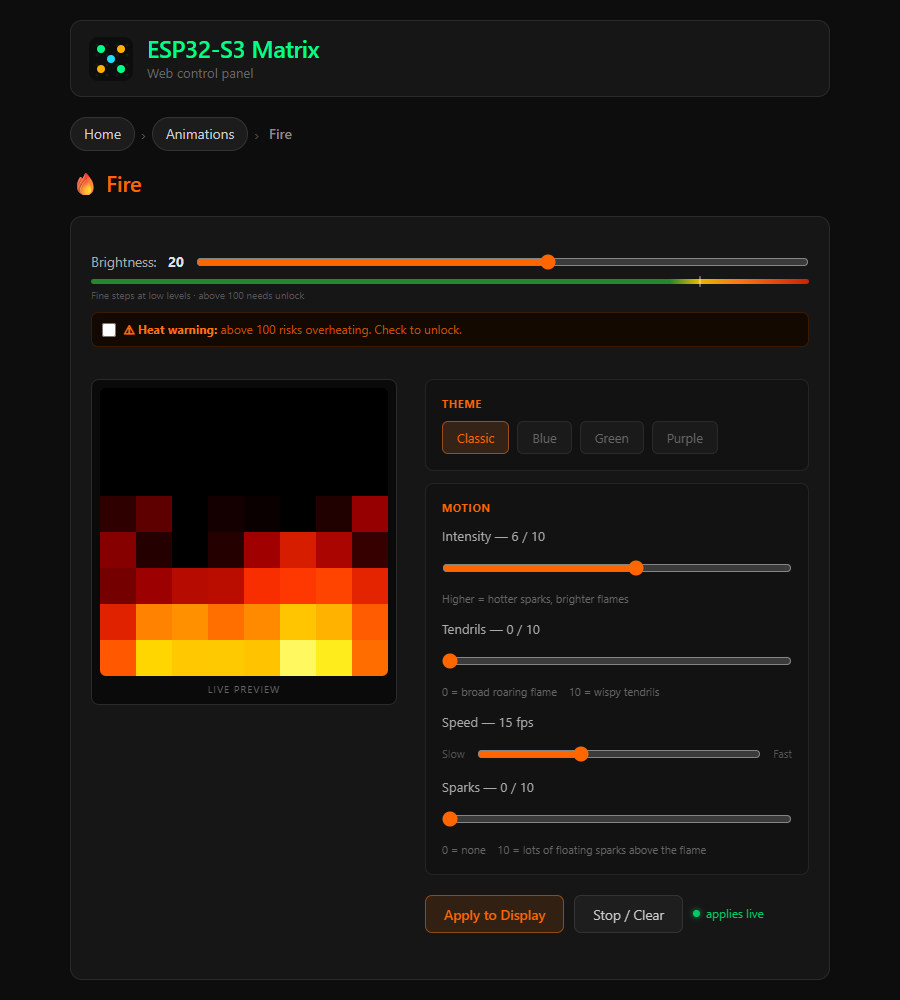
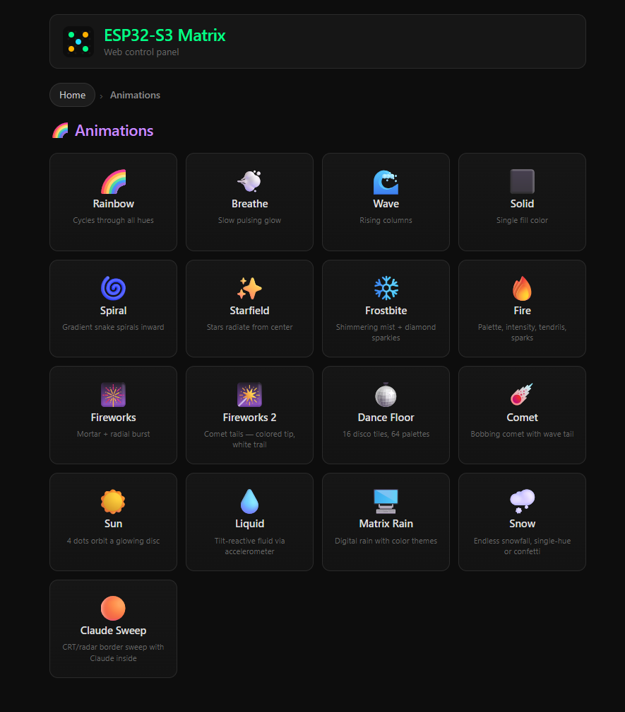
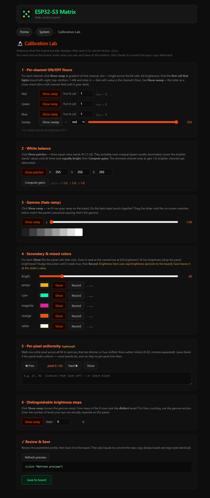

Open-source firmware for the Waveshare ESP32-S3-Matrix: 64 RGB LEDs on a tiny ESP32-S3 board. It sets up its own WiFi, serves its own control panel, and exposes an HTTP API that anything can drive — fire, rain, fireworks, weather, a clock, scrolling text, or your own pixels. No app, no cloud, no computer required.

A self-contained little display that's genuinely yours — and that any program can light up.
Power it over USB-C and it boots straight into whatever it was last showing. No computer in the loop — it runs the show by itself.
First boot opens a setup hotspot; join it, pick your network, done. After that it's reachable at esp32matrix.local. Hold BOOT to reset.
A full web UI is served from the board — animations, brightness, weather, clock, a pixel painter, and a calibration lab. Open it on your phone.
Fire, matrix rain, fireworks, dance floor, comet, an IMU-reactive liquid, snow, starfield, and more — each tunable live.
Live weather by ZIP, an NTP clock + countdown timers, scrolling text, and a vibration-reactive VU meter.
Every capability is an HTTP endpoint. Send a built-in animation, push your own 8×8 frames, set brightness, or read sensors — from any language.
Served straight from the device — no install. These are live screenshots of the real board.




Anything that can make an HTTP request can drive the panel. Base URL = http://esp32matrix.local.
Launch a built-in animation (the transient flag keeps it out of boot-resume):
# roar some fire at half intensity curl -X POST http://esp32matrix.local/api/display/animation \ -H "Content-Type: application/json" \ -d '{"type":"fire","transient":true,"intensity":6,"theme":"classic"}'
Push your own animation — up to 24 frames, each 64 RRGGBB pixels (row-major):
# a 2-frame blink; loop:0 = forever curl -X POST http://esp32matrix.local/api/display/frames \ -d '{"frames":["…384 hex chars…","…"],"frame_ms":150,"loop":0}'
And the rest of the surface:
{ level: 0–255 } — global brightness (persisted).RRGGBB — mirror it anywhere.Full reference: docs/API.md. The board persists its last animation, brightness, and settings to flash, so it powers back up into whatever it was doing.
The panel doubles as Claude's expression channel.
Because the whole board is just an HTTP API, a companion project turns it into an ambient status light for AI coding sessions: Claude shows a spinner while it works, a checkmark when it's done, a glyph when it's waiting on you — all by POSTing to the same endpoints above.
That lives in its own repo, Claude Expression Studio — a renderer-agnostic presence & expression system with a browser studio to design and wire animations. It talks to this board only over the API on the left, and it runs board-free too (everything simulates in the browser).
It's a ~$15 board and a one-click flash.
The Waveshare ESP32-S3-Matrix — an 8×8 WS2812B grid on a USB-C ESP32-S3. On Amazon ↗
Use the browser flasher or the offline flash.bat/flash.sh in install/. One merged binary — app + web UI.
Connect to the ESP32-Matrix-Setup hotspot, pick your network, and open esp32matrix.local. That's it.